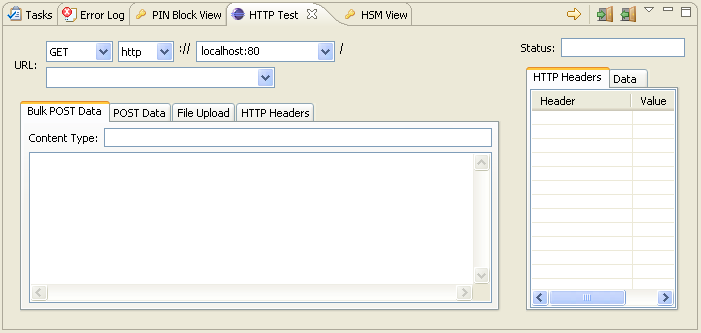
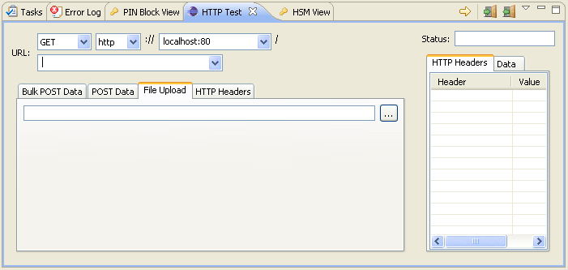
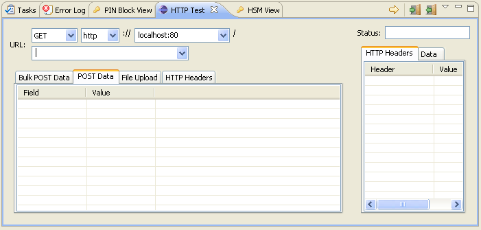

To invoke a request, fill out the appropriate fields in the request and select the Invoke action. Depending on the type of request to be made, there may be additional information you want to provide in addition to the URL information. See the screen shots below:



Adding/removing post data fields to the Post Data tab is the same as adding HTTP Header data. See HTTP Headers for details.
In addition, you can specify the HTTP Headers to submit with the request.
When the request has been invoked, the information on the right-hand side of the view will be populated. This includes the HTTP Status Code, the headers and the actual text of the response.